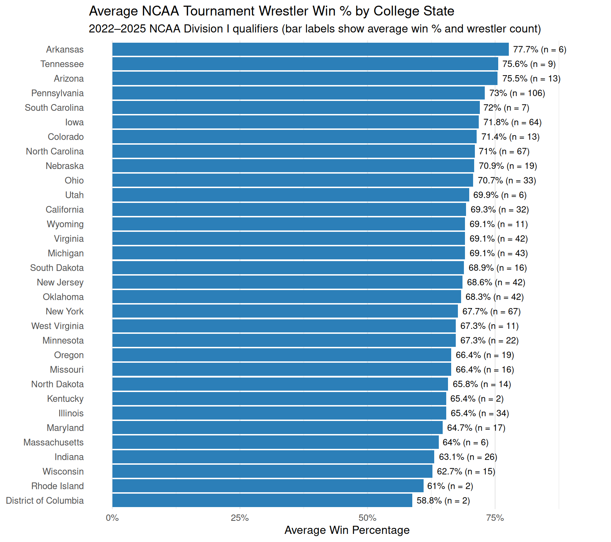

Where
Best NCAA Wrestlers by College State
Hover over any U.S. state on the map below to see the highest-winning NCAA Division I tournament wrestlers (2022–2025) from colleges in that state, ranked by career tournament-season win percentage.
Average Wrestler Win Percentage by State
The chart below compares states with NCAA Division I tournament qualifiers by the average win percentage of their wrestlers across the 2022–2025 seasons.
